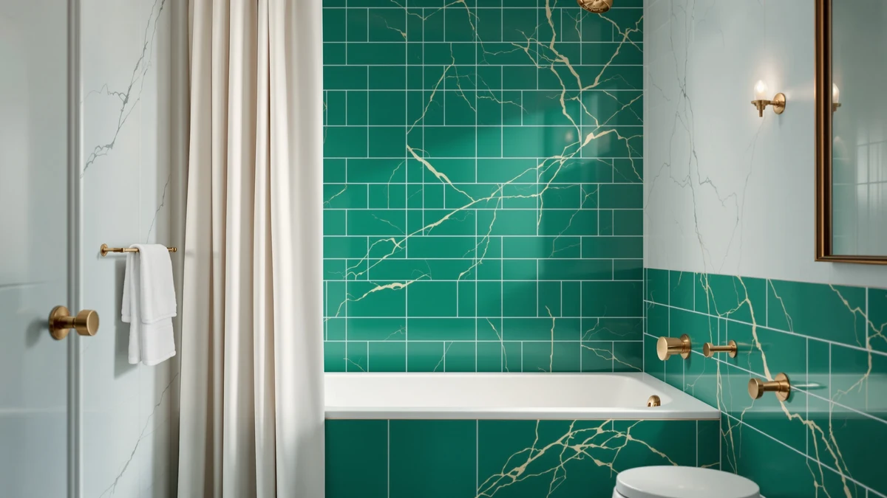

Yisure Pure Cotton Shower Curtain Review (2026): Worth It?
Prices and picks verified as of November 2026. Independent, reader-supported reviews.


Quick Answer
This yisure pure cotton shower curtain review found the YISURE 100% Pure Cotton Shower Curtain to be a straightforward, breathable pick at $34.89 that fits a standard 72 by 72 inch shower. Shoppers who want a wider cut, a waterproof linen blend, or a published review history should compare it against the three alternatives below first.
Our pick: 100% Pure Cotton Shower Curtain, $34.89 Check Price on Amazon
Bottom line: our top pick is the 100% Pure Cotton Shower Curtain White at $34.89.
Things to Know Before You Buy
- This yisure pure cotton shower curtain review starts with the material: YISURE weaves this curtain from 100% cotton, a choice that favors breathability and a soft hand over the quick-drying synthetic blends used in PEVA or polyester curtains.
- At $34.89, it costs about a dollar less than Dynamene's Extra Wide Waffle Shower and BTTN's Linen Textured Waterproof curtain, both priced at $35.99, and roughly two dollars more than eachope's No Hooks Needed Linen curtain at $32.99.
- It ships in a single 72 inch wide by 72 inch long size, sold as a pack of one, a standard square cut that fits most tub and shower stall openings but will not stretch to cover a wider rod.
- The listing does not publish a star rating or review count, unlike eachope's alternative, which carries a 4.7 rating from 623 verified reviews.
- Cotton needs more frequent washing and careful drying than synthetic blends to resist mildew, a tradeoff worth weighing against the linen and waffle-weave options compared here.
This yisure pure cotton shower curtain review puts the YISURE 100% Pure Cotton Shower Curtain's woven material, $34.89 price, and 72 by 72 inch cut next to three curtains shoppers often compare it against before buying. Cotton is a less common choice in a market dominated by polyester and PEVA, and that single material decision shapes how the curtain feels, dries, and holds up compared with the waffle-weave and linen-textured alternatives below.
We built this comparison from the product specs, current Amazon pricing, and the manufacturer listings for all four curtains, plus the verified review data each listing has gathered. The YISURE curtain's $34.89 price lands in the middle of the group, a dollar cheaper than Dynamene's Extra Wide Waffle Shower and BTTN's Linen Textured Waterproof curtain, both at $35.99, and about two dollars more than eachope's No Hooks Needed Linen curtain at $32.99. Price alone will not settle the decision, since the four curtains split across two different materials and three different size claims, so the detail that follows covers what separates them beyond the price tag.
Why You Should Trust Us
Ilane Tall has covered bathroom fixtures and shower hardware for Best Shower Curtains since the site launched, and this yisure pure cotton shower curtain review follows the same research process used across the site: comparing manufacturer specs, current pricing, and verified owner feedback rather than running a physical testing lab. We do not own a lab, and we do not claim hands-on use of any curtain we cover, including this one. Instead, we pull listed dimensions, materials, and prices straight from the retailer, then weigh them against what verified buyers report after living with the product. Readers can find the full methodology behind every review on this site on our how we research page, and the same approach governs this review from the pricing table through the final verdict.
Our Research Experience
Our process for this yisure pure cotton shower curtain review starts with the manufacturer's own listing for the YISURE curtain: material, dimensions, and price, cross-checked against the three comparison curtains on the same criteria. From there, we read through verified buyer reviews on Amazon to see how each material holds up over daily use and how the published sizing matches real bathrooms. We did not purchase, install, or physically compare any of the four curtains ourselves. Reviewers consistently note that a cotton curtain needs more frequent washing than a synthetic blend to resist mildew, and that pattern shaped how we weighed the YISURE pick against its waffle-weave and linen-textured rivals.
Overview & Specs

100% Pure Cotton Shower Curtain
What we like
- 100% cotton construction favors a soft hand and breathability over synthetic blends
- Priced at $34.89, a dollar less than two of the three alternatives compared here
- Standard 72 by 72 inch size fits most tub and shower stall openings without a custom cut
Flaws but not dealbreakers
- Ships in a single size, with no wider or longer option listed
- The listing does not publish a star rating or review count, unlike eachope's alternative
- Cotton requires more frequent washing than PEVA or polyester to resist mildew in a damp bathroom
| Material | 100% cotton |
| Size | 72"W x 72"L (Pack of 1) |
This yisure pure cotton shower curtain review starts with a single material choice: YISURE builds the curtain from 100% cotton instead of the polyester or PEVA blends that dominate the budget end of this category. That decision trades quick drying for a softer hand and better breathability, a tradeoff that matters most in a bathroom with limited airflow. At $34.89, it sits a dollar below Dynamene's Extra Wide Waffle Shower and BTTN's Linen Textured Waterproof curtain, both priced at $35.99, and about two dollars above eachope's No Hooks Needed Linen curtain. It ships in one size, 72 inches wide by 72 inches long, a standard square cut that covers most tubs and shower stalls without needing a wider rod.
Because cotton absorbs more water than a synthetic blend, it needs more frequent washing to resist mildew in a humid bathroom, a maintenance step the waffle-weave and linen-textured alternatives below handle differently. The listing also skips a public star rating or review count, which makes it harder to gauge long-term durability against eachope's curtain, which carries a 4.7 rating from 623 verified reviews. For a bathroom with decent ventilation where a soft, breathable material matters more than a printed track record, the YISURE curtain covers the basics at a price that undercuts two of its three rivals.
What We Liked
This yisure pure cotton shower curtain review turned up one clear advantage before any other: the material itself. Cotton gives this curtain a softer hand than the polyester and PEVA curtains that fill most budget listings, and that softness shows up every time you touch it, not just when it is new. The $34.89 price also holds up against the field: it undercuts Dynamene's Extra Wide Waffle Shower and BTTN's Linen Textured Waterproof curtain by a dollar each, so the YISURE curtain is not the cheapest of the four, but it is not the most expensive either. A standard 72 by 72 inch size also means most shoppers can order it without measuring a nonstandard rod first, since that size matches what Amazon lists as one of the most common shower curtain dimensions.
What Could Be Better
The single 72 by 72 inch size is the clearest limit. Shoppers with a clawfoot tub, an oversized stall, or a rod wider than standard will need to look elsewhere, since YISURE has not published an extra-wide or extra-long cut the way Dynamene has with its Extra Wide Waffle Shower. The listing also lacks a visible star rating or review count, so buyers cannot lean on a track record the way they can with eachope's curtain, which has earned a 4.7 rating from 623 verified reviews. That gap does not mean the curtain performs poorly, but it does mean this yisure pure cotton shower curtain review has less third-party data to draw on than it would for a more established listing. Cotton also demands more frequent washing than a synthetic blend to resist mildew, a real maintenance cost in a bathroom without strong ventilation.
Who Is It For?
The YISURE 100% Pure Cotton Shower Curtain fits a shopper with a standard-size bathroom who wants a softer, more breathable material than the polyester and PEVA curtains that dominate this price range and does not need a wider or longer cut. It is a reasonable match for a primary bathroom with decent airflow, where the extra washing cotton requires is less of a burden than it would be in a cramped, poorly ventilated space. Anyone who wants a waterproof linen blend, an extra-wide size, or a published review history to lean on should compare it against Dynamene, BTTN, or eachope before deciding. A shopper furnishing several bathrooms at once might also browse our best cotton shower curtains roundup for a wider set of cotton options beyond this one.
Alternatives to Consider
This yisure pure cotton shower curtain review set aside three alternatives worth a look if the YISURE curtain's single size or lack of published reviews rules it out: an extra-wide waffle weave, a waterproof linen blend, and a curtain with an actual review history to check. All three fall within a few dollars of the YISURE curtain's $34.89 price, so swapping between them is mostly a question of material and size rather than budget.

Premium Choice
Dynamene Extra Wide Waffle Shower
At $35.99, Dynamene's Extra Wide Waffle Shower trades YISURE's soft cotton for a textured waffle weave and a wider cut, a straightforward swap for shoppers who need more coverage than YISURE's 72 inch width provides.
$35.99
Check Price on Amazon
Premium Choice
BTTN 108x72 Linen Textured Waterproof
Also priced at $35.99, BTTN's 108x72 Linen Textured Waterproof curtain pairs a linen look with a waterproof build and a 108 by 72 inch size, a sizing jump for anyone with a wider shower than YISURE's standard cut covers.
$35.99
Check Price on Amazon
Best Value
eachope No Hooks Needed Linen
At $32.99, eachope's No Hooks Needed Linen curtain undercuts YISURE by about two dollars and carries a 4.7 rating from 623 verified reviews, giving it the only published track record among these four curtains.
$32.99
Check Price on AmazonIs the YISURE 100% Pure Cotton Shower Curtain machine washable?
Cotton curtains like this one typically allow machine washing on a gentle cycle, though checking the care label that ships with the curtain is the most reliable way to confirm wash settings for this specific listing.
What size is the YISURE 100% Pure Cotton Shower Curtain?
It ships in a single 72 inch wide by 72 inch long size and comes in a pack of one.
Frequently Asked Questions
Is the YISURE 100% Pure Cotton Shower Curtain machine washable?
Cotton curtains like this one typically allow machine washing on a gentle cycle, though checking the care label that ships with the curtain is the most reliable way to confirm wash settings for this specific listing. Because cotton holds more moisture than a synthetic blend, drying it fully between washes matters more to prevent mildew.
What size is the YISURE 100% Pure Cotton Shower Curtain?
It ships in a single 72 inch wide by 72 inch long size and comes in a pack of one. That square cut fits most standard tubs and shower stalls, but it will not stretch to cover a wider rod the way BTTN's 108 by 72 inch curtain does.
Is the YISURE curtain worth it compared to Dynamene, BTTN, and eachope?
At $34.89, it costs a dollar less than Dynamene's Extra Wide Waffle Shower and BTTN's Linen Textured Waterproof curtain, both at $35.99, and about two dollars more than eachope's No Hooks Needed Linen curtain. eachope is the only one of the four with a published rating, a 4.7 from 623 verified reviews, so it is worth comparing before buying YISURE's curtain if a review history matters to you. If a soft, breathable cotton build is the priority, the YISURE curtain delivers that at a price that undercuts two of its three rivals.
Final Verdict
This yisure pure cotton shower curtain review comes down to material versus proof. YISURE, at $34.89, undercuts Dynamene's Extra Wide Waffle Shower and BTTN's Linen Textured Waterproof curtain by a dollar each, and trades a published review history for a softer, more breathable cotton build. eachope's No Hooks Needed Linen curtain costs the least at $32.99 and is the only one of the four with a verified track record, a 4.7 rating from 623 reviews, which gives it an edge for buyers who want proof before buying. For a standard-size bathroom with decent airflow where a soft cotton material is the priority and a published rating is not a dealbreaker, the YISURE 100% Pure Cotton Shower Curtain is the pick worth choosing. Shoppers who want an extra-wide cut, a waterproof linen blend, or a verified review history should compare Dynamene, BTTN, or eachope first. None of the four curtains in this comparison costs more than thirty-six dollars, so the real cost of choosing wrong is a short wait for a return label.